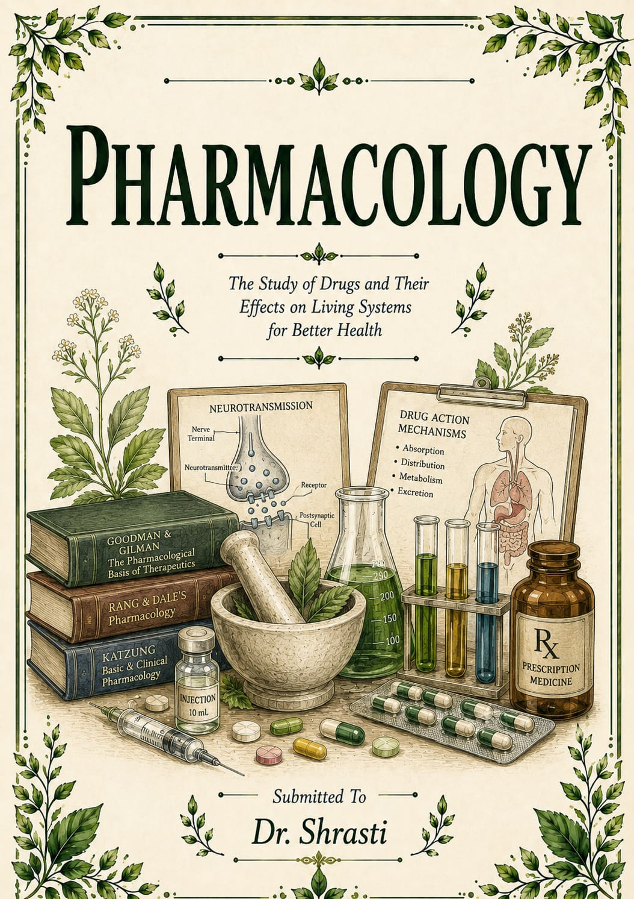

Pharmacology is the comprehensive biomedical science dedicated to researching and characterizing how natural or synthetic chemical substances (drugs) interact with living organisms to produce biological effects. Rooted in the ancient Greek word pharmakon (meaning both drug and poison), this multidisciplinary field investigates drug origins, chemical properties, mechanisms of action, and therapeutic uses
Pharmacokinetics (PK): This examines what the body does to a drug, commonly broken down by the ADME process: Absorption (how the drug enters the bloodstream), Distribution (how it travels to specific tissues), Metabolism (how the body alters or breaks down the substance), and Excretion (how it is ultimately eliminated from the body).
The field encompasses drug composition and properties, functions, sources, medicinal chemistry, drug design, molecular and cellular mechanisms, organ/systems mechanisms, signal transduction/cellular communication, molecular diagnostics, interactions, chemical biology, therapy, medical applications, toxicology, and antipathogenic capabilities. The two main areas of pharmacology are pharmacodynamics and pharmacokinetics. Pharmacodynamics studies the effects of a drug on biological systems, and pharmacokinetics studies the effects of biological systems on a drug. In broad terms, pharmacodynamics discusses the chemicals with biological receptors, and pharmacokinetics discusses the liberation, absorption, distribution, metabolism, and excretion (LADME) of chemicals from the biological systems.
Pharmacology is not synonymous with pharmacy, though the two terms are frequently confused. Pharmacology is a branch of medical and biological sciences which encompasses the research, discovery, and characterization of chemicals exhibiting biological effects, alongside the elucidation of cellular and organismal function in relation to these chemicals. In contrast, pharmacy, a health services profession, is concerned with the application of the principles learned from pharmacology, pharmaceutics, medicinal chemistry, pharmacognosy, clinical pharmacy and others in its clinical settings; whether it be in a dispensing or clinical care role. In either field, the primary contrast between the two is their distinction between direct-patient care, pharmacy practice, and the science-oriented research field, driven by pharmacology.
The word pharmacology is derived from Greek word φάρμακον, pharmakon, meaning "drug" or "poison", together with another Greek word -λογία, logia with the meaning of "study of" or "knowledge of"[3][4] (cf. the etymology of pharmacy). Pharmakon is related to pharmakos, the ritualistic sacrifice or exile of a human scapegoat or victim in Ancient Greek religion. The modern term pharmacon is used more broadly than the term drug because it includes endogenous substances, and biologically active substances which are not used as drugs. Typically it includes pharmacological agonists and antagonists, but also enzyme inhibitors (such as monoamine oxidase inhibitors).[5]